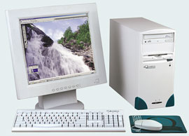
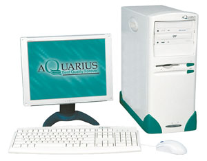
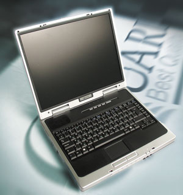

Андрей Ездаков
Любая компания или организация формирует свой компьютерный парк, исходя, как правило, из необходимой функциональности рабочих мест и учитывая финансовые возможности. Эти два фактора в основном и определяют технические и эксплуатационные параметры компьютеров, составляющих основу корпоративной информационной системы, - они-то и относятся к классу корпоративных рабочих мест (КРМ).
На отечественном ИТ-рынке представлена продукция практически всех ведущих мировых компаний и целого ряда отечественных производителей компьютерной техники. Их линейки продуктов, которые можно отнести к категории КРМ, обеспечивают предприятиям широкие возможности выбора как в функциональном, так и в ценовом диапазоне. В числе лидеров этого рынка - компания "Аквариус" (http://www.aq.ru), созданная еще в 1989 г. и ставшая первой российской негосударственной организацией, которая открыла собственное заводское производство компьютеров.
Рынок с точки зрения "Аквариуса"
Специалисты компании "Аквариус" внимательно изучают рынок ПК офисного назначения. По их мнению, сейчас можно выделить две основные новые тенденции, существенно влияющие на развитие и формирование КРМ.
Одна из тенденций заключается в том, что корпоративные заказчики обращают все больше внимания не только на традиционные характеристики компьютера - его производительность и надежность, но и на возможность компактного размещения, бесшумность работы и эргономичный дизайн. В ограниченном пространстве рабочего места офисного сотрудника даже небольшие корпуса типа tower могут оказаться неоправданно громоздкими. Поэтому, в частности, в общей структуре продаж ПК неизменно возрастает доля ноутбуков, выгодно отличающихся в этом плане портативностью, стильным дизайном, низким уровнем шума и энергопотребления.
По данным независимых исследований, на которые опираются сотрудники "Аквариус", около 80% владельцев ноутбуков практически не используют функцию автономного питания, а те мобильные компьютеры, которые все-таки функционируют в режиме энергопотребления от батарей, примерно 95% времени работают от сети. В результате большинство владельцев ноутбуков платят за функцию, которой фактически не пользуются.
Исходя из этого, "Аквариус" предлагает альтернативный вариант настольных ПК для пользователей, нуждающихся в мобильном решении, но не готовых платить лишние деньги за не нужные им функции. Этот новый тип портативного переносного компьютера был назван "дескноут" (симбиоз англоязычных терминов desktop и notebook). В конструкции этих устройств, выполненных в корпусе мобильных компьютеров, используются комплектующие обычных настольных ПК и отсутствует внутренний источник автономного питания. Таким образом, "дескноуты" сочетают функциональные возможности и производительность настольных ПК с компактностью и эргономичностью ноутбуков.
Другой характерной тенденцией развития КРМ в последнее время стала тесная интеграция всех офисных коммуникаций в рамках IP-сетей. Все большее число корпоративных заказчиков отказываются от традиционных систем связи в пользу решений класса IP-телефонии. По данным независимых исследований, более 40% американских компаний, штат которых превышает 500 человек, уже начали переводить свои КИС на системы IP-телефонии. В России этот показатель пока существенно ниже, но IP-коммуникации тоже быстро набирают популярность.
По мнению специалистов "Аквариус", в зависимости от решаемых бизнес-задач, степени развитости документооборота и электронного делопроизводства, необходимой функциональности, финансовых возможностей и ряда других факторов КРМ можно условно разделить на три класса.
К первому следует отнести маломощные ПК, используемые в основном для поддержки базового документооборота, например, работы электронной почты, стандартных модулей систем электронного документооборота (кадры, бухгалтерия и т. п.) и простых офисных приложений. Такие КРМ, связанные в локальную сеть, чаще всего используются на небольших предприятиях с ограниченными финансовыми ресурсами.
Рабочие места среднего уровня (второго класса) строятся на базе более мощных компьютеров, объединенных уже, как правило, в защищенную локальную сеть с доступом в Интернет. Такие системы используются для интенсивной совместной работы с корпоративными базами данных, разнообразными офисными пакетами, документами и электронной почтой.
И наконец, к третьему классу относятся наиболее развитые КРМ, оснащенные не только самыми мощными ПК, подключенными к интрасетям и Интернету, но и современным цифровым телекоммуникационным оборудованием. Внедрение систем IP-телефонии и телеконференций связывает здесь воедино и упрощает управление практически всеми средствами связи: электронной почтой, традиционными телефонами и факсами, сотовой связью и SMS. Благодаря этим технологиям пользователь может не только постоянно оставаться на связи, но и оперативно обращаться к корпоративным базам данных, проверять свою электронную почту даже удаленно с помощью мобильного телефона.
Производственная компания "Аквариус"Компания специализируется на выпуске ПК и серверов на собственных промышленных мощностях в городах Шуе и Москве. "Аквариус" ведет разработку и создание новых моделей компьютеров и серверов под собственными торговыми марками Aquarius и AquaServer. Кроме того, компания занимается организацией производства на собственных площадях специализированной вычислительной техники и компьютерной техники по контрактам с крупнейшими мировыми производителями, в том числе и под их торговыми марками. Этому во многом способствует то, что система разработки, проектирования и производства "Аквариус" соответствует стандарту ISO 9001-2001 и военным требованиям Российского агентства по системам управления (РАСУ). Компьютеры, выпускаемые компанией, имеют гигиенический и экологический сертификаты, а также сертифицированы на совместимость с Windows 2000 и XP. Объем продаж ПК за прошедший год составил более 144 тыс. штук. "Аквариус" вкладывает значительные средства в развитие своей торговой марки и позиционирование ее как брэнда. В это понятие входит не только качество продукции, подтверждаемое соответствующими сертификатами, но и развитая система сервиса и поддержки, а также известность торговой марки на рынке и поддержка репутации компании. Помимо производства, основными направлениями своей деятельности "Аквариус" считает развитие и поддержку сети партнеров первого и второго уровня, число которых достигло 820, а также развитие региональной сервисной инфраструктуры, которая сейчас объединяет более 200 авторизованных сервисных центров. В числе постоянных пользователей техники Aquarius - государственные структуры, крупные российские предприятия и коммерческие организации. Среди них можно отметить Администрацию Президента РФ, Министерство обороны, Федеральную службу безопасности, Федеральную пограничную службу, Фонд социального страхования РФ, Министерство финансов, Центральный Банк России и Сбербанк, Правительство Москвы и другие.
|
Модельный ряд традиционных КРМ Aquarius
Компания "Аквариус" выпускает полный спектр ПК, необходимых для построения современных КРМ. Характерная черта всех ее модельных рядов - длительный срок жизни компьютеров, составляющий шесть месяцев и более. С одной стороны, это отвечает потребностям корпоративных заказчиков, для которых стабильность платформы и длительность ее жизненного цикла особенно важна. С другой стороны, продолжительный срок жизни моделей упрощает для компании поддержку достаточного запаса комплектующих, снижая возможные производственные издержки от перебоев с их поставками и уменьшая время реакции на запросы дистрибьюторов и сервисных центров.
Для небольших и средних предприятий компания предлагает недорогие компьютеры серии Aquarius Standard, специально разработанные для нужд среднего и малого бизнеса. Девиз этой серии - простота и надежность. Бухгалтерия, делопроизводство, офисные приложения, электронная почта и работа в Интернете - вот основная сфера приложений, для которых создана серия Standard. Эта модель наилучшим образом подходит тем пользователям, которым нужна полнофункциональная настольная система с достаточной производительностью, не требующая больших финансовых вложений.
Помимо небольших и средних предприятий такие ПК разумно использовать в бюджетных организациях, образовательных учреждениях. Кроме того, Aquarius Standard имеет хорошие возможности для последующего функционального расширения и аппаратной модернизации, поэтому такие машины можно брать "на вырост".
Несмотря на невысокую стоимость, в конструкции Aquarius Standard использованы комплектующие только от ведущих мировых производителей, прошедшие входной контроль. При разработке, в процессе производства и тестирования к моделям этой серии предъявляются не менее жесткие требования, чем к другим, более мощным ПК компании. В частности, после сборки каждый компьютер серии Aquarius Standard проходит обязательное 24-часовое тестирование в термокамере.
Базовые модели серии Aquarius Standard построены на основе процессоров Intel Celeron или AMD Duron с частотой 1,2 ГГц и системных плат на наборах микросхем соответственно VIA PLE133T и KLE133, т. е. изначально обладают встроенными графическим и звуковым адаптерами. В эти компьютеры устанавливается память типа PC133 SDRAM объемом до 1 Гбайт и жесткий диск емкостью до 40 Гбайт. Все системы данного семейства поставляются в компактных корпусах формата microATX.
Более мощный представитель серии Aquarius Standard укомплектован процессором Intel Celeron с тактовой частотой 1,7 ГГц. Эта машина собирается на базе системных плат с набором микросхем SiS651. Такие ПК оснащаются более быстрой современной оперативной памятью типа DDR SDRAM объемом до 2 Гбайт, встроенными графическим и звуковым адаптерами, сетевым контроллером. На системной плате предусмотрен слот AGP, позволяющий заменить встроенный видеоадаптер более совершенной внешней видеоплатой с графическим ускорителем. Кроме того, процессор Celeron также можно заменить более мощным Pentium 4 с тактовой частотой до 2,8 ГГц.
Серия рабочих станций Aquarius Professional разработана специально для корпоративных заказчиков. Модели этой серии отличаются высокой надежностью и качеством, широким набором доступных функций, эргономичностью и строгим классическим дизайном корпусов. Компьютеры этой серии широко используются для администрирования КИС и баз данных, работы с требовательными к аппаратным ресурсам офисными приложениями, а также в составе настольных издательских систем, систем автоматизированного проектирования и т. д.
|  | Корпоративная рабочая станция серии Aquarius Professional.
|
В серию Aquarius Professional включены системы, построенные на основе высокопроизводительных процессоров Intel Pentium 4 и AMD Athlon XP с системными платами на базе наборов микросхем SiS651 и VIA KM266 соответственно. Компьютеры этой серии также оснащены встроенным графическим адаптером, интегрированными сетевым контроллером и звуковой подсистемой AC'97. Для установки внешней высокопроизводительной видеоплаты с графическим ускорителем во всех ПК этой серии предусмотрен разъем AGP. Эти системы, как и компьютеры серии Aquarius Standard, поставляются в компактных корпусах microATX. При этом рабочие станции выгодно отличаются от своих младших "родственников" наличием на лицевой панели разъемов шины USB и звуковых выходов.
Название серии рабочих станций Aquarius Elite говорит само за себя. Эти компьютеры созданы для самых искушенных и требовательных заказчиков, которым для работы необходимы более широкие возможности, чем те, что можно получить с помощью ПК двух предыдущих серий.
Рабочие станции Aquarius Elite могут использоваться для решения практически любых современных задач, требующих особенно мощных аппаратных ресурсов. Они подходят для работы с большими базами данных, обработки видеоизображений и 3D-графики, создания систем автоматизированного проектирования. Широкие возможности модернизации компьютеров этой серии обеспечивают длительный срок их эксплуатации и, как следствие, низкую стоимость владения КИС, построенных на их основе.
Компьютеры серии Aquarius Elite строятся на базе процессоров Intel Pentium 4 с тактовой частотой до 3,06 ГГц, системных плат ASUSTeK и Intel. В них может быть установлен большой объем памяти типа DDR SDRAM и высокоскоростные жесткие диски емкостью более 100 Гбайт. Мощный процессор, быстрая память и высокопроизводительные внешние видеоадаптеры с графическими ускорителями позволяют обрабатывать изображения высокой сложности и проводить сложные расчеты в масштабе реального времени.
|  | Высокопроизводительная рабочая станция Aquarius Elite.
|
Специальные предложения и проекты
На основе настольных ПК серий Aquarius в соответствии с требованиями заказчиков производится и специализированная техника. Такие устройства могут быть оснащены встроенными средствами защиты информации или предназначаться для работы в экстремальных условиях окружающей среды. Например, рабочие станции могут поставляться с системой защиты от несанкционированного доступа "Аккорд" и с платами "Салют", обеспечивающими защиту обрабатываемой на ПК информации от перехвата за счет генерации электромагнитных излучений и сетевых наводок.
При производстве специализированных решений "Аквариус" проводит различные исследовательские работы, такие, как специальные проверки на базе ФГУП НИИ "Восход", подтверждаемые соответствующими сертификатами; проверки на устойчивость к внешним воздействиям; климатические и механические испытания и ряд других.
Во второй половине 2001 г. компания открыла новое направление деятельности - производство на своих мощностях оборудования под торговыми марками ведущих мировых производителей. Например, с января 2002 г. на московском заводе "Аквариус" запущено производство компонентов кабельных систем под торговой маркой AMP NetConnect. В текущем году стартовал еще один подобный проект - совместное производство решений для IP-телефонии с компанией Cisco Systems. В рамках этого проекта "Аквариус" получила статус AVVID-партнера Cisco, который позволяет разрабатывать решения на базе открытых стандартов, предлагаемых архитектурой Cisco AVVID. "Аквариус" разрабатывает, сертифицирует и производит серверы TCM24, на которые в дальнейшем устанавливается ПО Cisco CallManager. Это оборудование представляет собой ключевой компонент, обеспечивающий функциональность систем корпоративной IP-телефонии. Технологический цикл включает в себя непосредственно сборку, инсталляцию специализированного системного ПО, тестирование, валидацию, маркировку и отправку дистрибьюторам.
Исследования и разработки"Аквариус" инвестирует до 10% своего дохода в проведение НИОКР. В 2002 году в компании был создан научно-технический центр, основные функции которого состоят в следующем:
|
Новый тип настольного ПК
Исходя из сформировавшейся тенденции рынка, компания "Аквариус" предлагает корпоративным пользователям новый тип компьютера, сочетающий в себе преимущества настольного и мобильного ПК. Компьютеры серии Aquarius Compact унаследовали, с одной стороны, компактный форм-фактор ноутбука, в котором объединены все основные компоненты (системный блок, монитор, клавиатура и мышь), а с другой - более дешевую и производительную комплектацию классического десктопа. В этих ПК нет встроенной аккумуляторной батареи; иными словами, они не рассчитаны на функционирование без внешнего электропитания.
|  | Новый тип персонального переносного компьютера Aquarius Compact.
|
Новые ПК были разработаны специально для заказчиков, работа которых связана с частыми переездами. Например, пользователями дескноута могут быть страховые и налоговые инспектора, торговые представители, агенты и коммивояжеры, а также сотрудники, чья деятельность часто связана с проведением выездных выступлений, докладов, лекций и презентаций. Полезным окажется такое устройство и для научных работников, перемещающихся между домом, офисом, архивами и библиотеками. Наконец, те, чья деятельность связана с информацией, составляющей государственную или коммерческую тайну, также могут заинтересоваться новым предложением. Теперь нет необходимости ежедневно вынимать и убирать в сейф жесткий диск, поскольку можно поместить туда весь ПК целиком.
Сейчас компания предлагает две модели таких устройств: Aquarius Compact Std и Compact Pro. Обе они оснащены 15-дюйм ЖК-монитором с разрешением 1024x768 в режиме XGA и базируются на системной плате с набором микросхем SiS M650. В них также имеются встроенные видеоадаптер, шестиканальный звуковой адаптер AC'97 с внутренними динамиками, модем стандарта V.90/V92 и сетевой адаптер Ethernet 10/100. Для расширения функциональных возможностей компьютеры этой серии снабжаются параллельным портом, двумя разъемами стандарта IEEE 1394, четырьмя портами USB 2.0, специальным слотом для карт памяти SmartMedia/MMC/MemoryStick/SD и разъемом для подключения карт PCMCIA 2.1 Type II.
В более мощной модели Aquarius Compact Pro используется процессор Intel Pentium 4 с тактовой частотой от 1,8 до 2,4 ГГц, объем памяти типа DDR может быть увеличен до 512 Мбайт, емкость жесткого диска составляет от 20 до 40 Гбайт, а встроенный привод CD-ROM может заменяться на DVD-ROM или комбинированное устройство DVD+CD/RW.
Младшая модель Aquarius Compact Std оснащается процессором Intel Celeron с тактовой частотой 1,7 ГГц, имеет стандартный объем памяти, равный 256 Мбайт, и емкость жесткого диска 20 Гбайт.
Компьютеры серии Aquarius Compact всего на 10-20% дороже традиционных настольных ПК в аналогичной конфигурации и могут служить им достойной альтернативой, особенно при нехватке свободного места на рабочем столе. Гарантийный срок обслуживания моделей этой серии составляет 3 года.
Гарантийное и сервисное обслуживание
На все компьютеры марки Aquarius предоставляется трехлетняя гарантия, которая распространяется также на мышь и клавиатуру. Ремонт техники осуществляют более 200 авторизованных сервисных центров во всех регионах России. Ремонт оборудования занимает не более трех рабочих дней. Помимо гарантийного и послегарантийного обслуживания сервисные центры оказывают комплексные услуги по модернизации компьютеров. Кроме того, пользователи техники Aquarius могут воспользоваться телефоном службы технической поддержки (095) 729-5151, доб. 127 или задать интересующие их вопросы по электронной почте support@asi.ru.
К концу этого года компания планирует запустить программу так называемого расширенного сервиса. В ее рамках будут предлагаться такие виды услуг, как ремонт техники с выездом к заказчику; ускоренные сроки ремонта техники; гарантированное оказание услуг, например, 24 часа в день, 365 дней в году; и прочие дополнительные сервисы.
Автор благодарит Светлану Шканакину и других сотрудников компании "Аквариус" за помощь при подготовке этого материала.